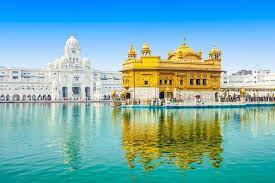
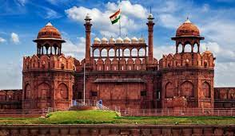

Travel
Taj Mahal

Taj Mahal is an iconic monument located in Agra, India. It is known for its stunning architecture and historical significance.
Golden Temple
Golden Temple, also known as Sri Harmandir Sahib, is a sacred Sikh shrine located in Amritsar, Punjab. It is a place of spiritual solace and immense beauty.
Red Fort
Red Fort, also known as Lal Qila, is a historic fort in Delhi, India. It served as the main residence of the Mughal emperors and is now a UNESCO World Heritage Site.